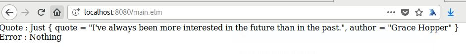

CORS à petits pas
Cross-Origin Resource SharingUne api simple
( git checkout step_1 )
import falcon
class QuoteResource:
def on_get(self, req, resp):
"""Handles GET requests"""
quote = {
'quote': (
"I've always been more interested in "
"the future than in the past."
),
'author': 'Grace Hopper'
}
resp.media = quote
api = falcon.API()
api.add_route('/quote', QuoteResource())
Appel http
( avec httpie )
[ioo@ ~]$ http GET http://localhost:8888/quote
HTTP/1.1 200 OK
Connection: close
Date: Mon, 08 Jan 2018 19:51:21 GMT
Server: gunicorn/19.7.1
content-length: 103
content-type: application/json; charset=UTF-8
{
"author": "Grace Hopper",
"quote": "I've always been more interested in the future than in the past."
}
Dans le navigateur

Client html + js
( git checkout step_2 )Source Main.elm, compilation elm-reactor
Le client effectue une HttpRequest en GET sur le serveur
WTF... Erreur
Pourtant http fonctionne
( avec httpie )
[ioo@ ~]$ http GET http://localhost:8888/quote
HTTP/1.1 200 OK
Connection: close
Date: Mon, 08 Jan 2018 19:51:21 GMT
Server: gunicorn/19.7.1
content-length: 103
content-type: application/json; charset=UTF-8
{
"author": "Grace Hopper",
"quote": "I've always been more interested in the future than in the past."
}
Et le navigateur...
Ouvrir ta console avant tes yeux tu dois !
CORS en simplifié

Modification du serveur
( git checkout step_3 )
class QuoteResource:
def on_get(self, req, resp):
"""Handles GET requests"""
quote = {
'quote': (
"I've always been more interested in "
"the future than in the past."
),
'author': 'Grace Hopper'
}
resp.status = falcon.HTTP_200
resp.append_header('Access-Control-Allow-Origin', '*')
resp.append_header('Allow', 'GET,OPTIONS')
resp.append_header('Access-Control-Allow-Headers', 'Content-Type')
resp.append_header('Access-Control-Max-Age', '86400')
resp.media = quote
Ça marche
...mais un peu comme un canard à 3 pattes
Le wildcard c'est open bar
N'importe qui peut créer un client sur son site et utiliser vos ressources
C'est une protection client pas serveur
Quelque soit vos restrictions avec CORS, le serveur répond avec le protocole HTTP
[ioo@ ~]$ http GET http://localhost:8888/quote
HTTP/1.1 200 OK
Connection: close
Date: Mon, 08 Jan 2018 22:56:38 GMT
Server: gunicorn/19.7.1
access-control-allow-headers: Content-Type
access-control-allow-origin: https://www.mozilla.com/
access-control-max-age: 86400
allow: GET,OPTIONS
content-length: 103
content-type: application/json; charset=UTF-8
{
"author": "Grace Hopper",
"quote": "I've always been more interested in the future than in the past."
}